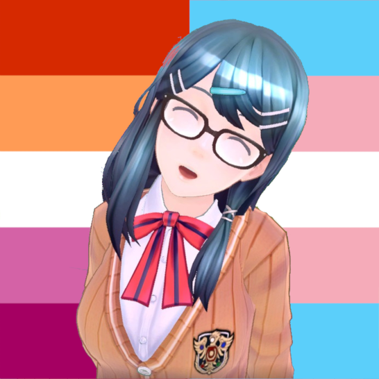

|
butterfly & |
 |
Present Lucina, aka Lucyyou know me as butterfly. i wouldn't call myself host, but i do front a lot. i'm very nerdy and geeky but many see me as a sweet girl. also i'm easily embarrassed. type: original singlet image source: original avatar made in VRoid Studio |
Future Past LucinaI came from the dark future of another world, and I became part of this system. I sincerely wish and fight for this world's existence and betterment. It seems I formed due to personal issues that Lucy was going through, and I wish to be a help to her. formed by: Lucy image source: @_ryonhei on Twitter |
|
Hina Amano / 天野陽菜[she still needs to fill out a bio] formed by: Lucy image source: 6060 on pixiv |
|
Makoto Konno / 紺野真琴[trying to get her to do a bio] formed by: Hina image source: C-WAVE on pixiv |
|
|  |
Tsubasa Oribe / 織部つばさ[we're collectively lazy] formed by: Lucy image source: Re-さいせー on pixiv |